Football
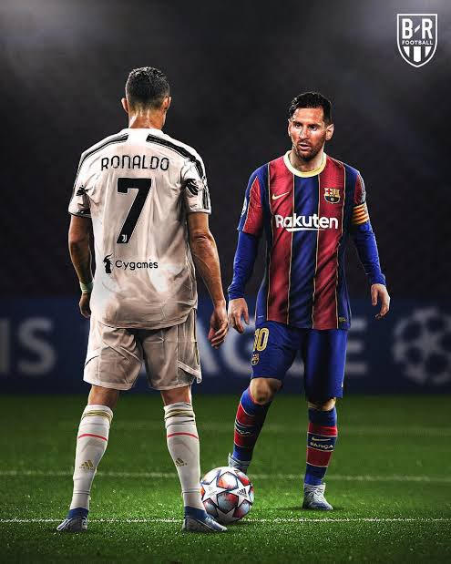Football is the world's most popular sport, played and watched by billions across the globe. It is played in over 200 countries and has a massive fan base with events like the FIFA World Cup.
Basketball
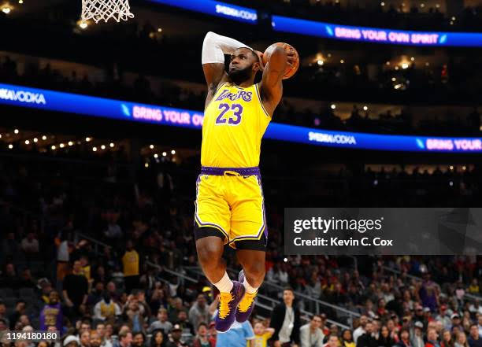Basketball is popular worldwide, especially in countries like the USA, Spain, and China. The NBA is one of the most followed sports leagues, with millions of fans tuning in every season.
Cricket
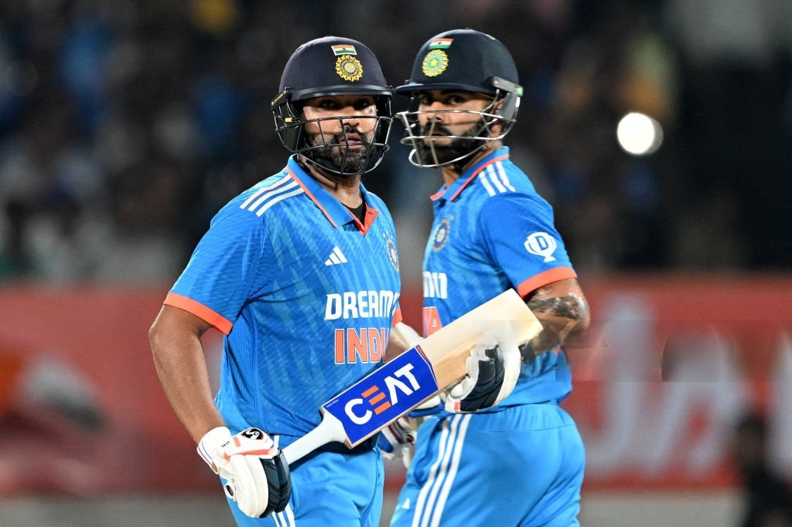Cricket is extremely popular in countries like India, South Africa, Australia, and England. Events like the ICC Cricket World Cup and the Indian Premier League (IPL) attract millions of viewers.
Tennis

Tennis has a huge following, especially during major tournaments like Wimbledon, the US Open, and the French Open. It’s a global sport played both professionally and recreationally.
Kabaddi
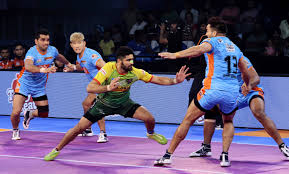A traditional sport in India, Kabaddi has gained massive popularity with the Pro Kabaddi League, and it’s especially popular in rural areas..
kho-kho
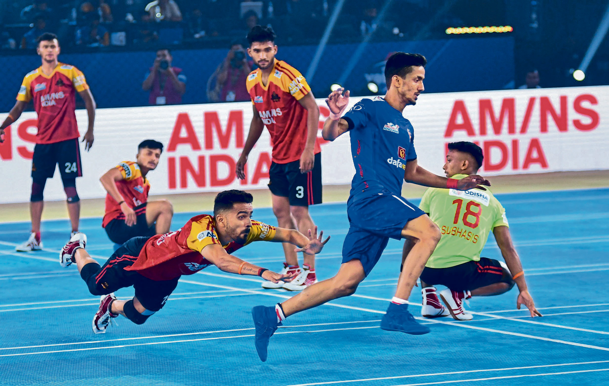Kho-Kho is a traditional Indian sport that has been played for centuries and is quite popular, especially in schools and rural areas. It's a team sport, typically played by two teams of nine players each, though this can vary in some formats.
Table Tennis

Table Tennis, or ping pong, is popular in Asia and Europe. It's known for its fast-paced gameplay and is often played at both professional and recreational levels.
Shooting
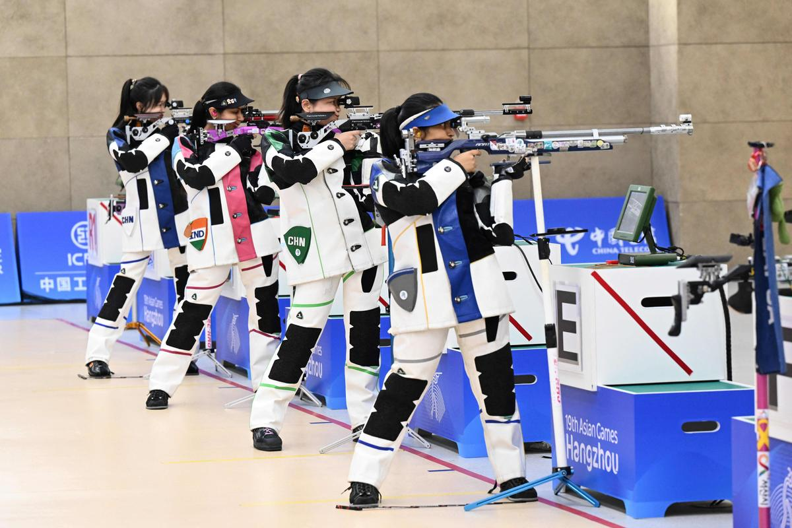Shooting is a popular and successful sport in India, with a rich history of achievements at the international level, especially in events like the Olympics, World Championships, and Commonwealth Games. The sport requires precision, focus, and control .
Volleyball
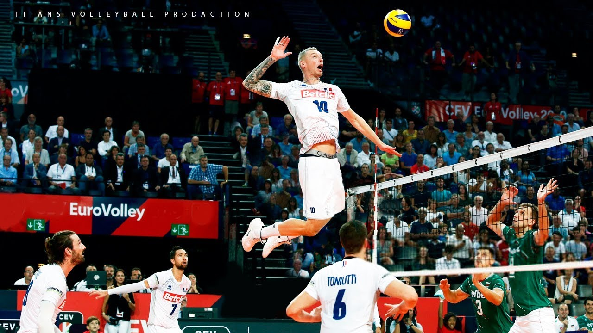Volleyball is widely played across the world, particularly in Brazil, the USA, and Russia. It is popular both as a recreational activity and as a professional sport.
Badminton
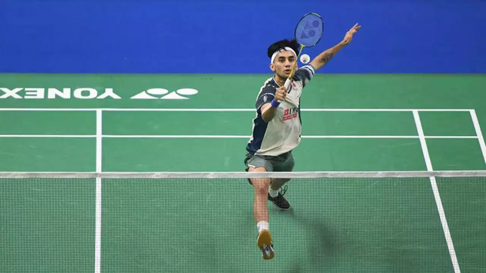Badminton is a popular sport in Asia and parts of Europe. It is especially popular in countries like China, Indonesia, and India.
Chess

Chess is one of the most popular and intellectually stimulating sports in India. It has a rich history and has gained significant recognition globally, especially due to India’s success in producing some of the best chess players in the world.
Hockey

Hockey holds a special place in India's sporting history and is often regarded as the country's national sport, even though cricket is more widely followed. The game of Field Hockey has been immensely successful for India on the international stage, with the country having a rich legacy in the sport.
Boxing
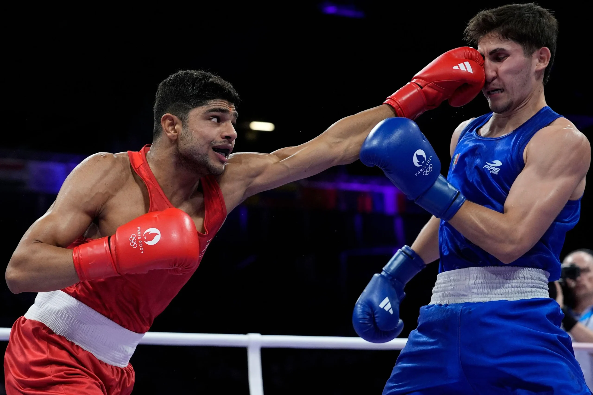Boxing is a combat sport with a rich history, especially popular in the USA and parts of Europe. Major events like the Olympics and championship matches are highly anticipated.
Swimming
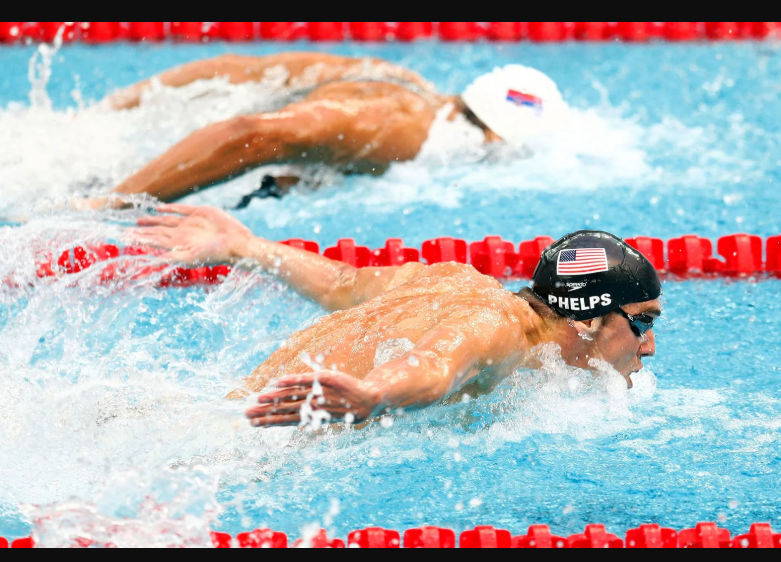Swimming is one of the oldest and most popular Olympic sports. It is enjoyed worldwide and can be practiced in both competitive and recreational settings.
Carrom
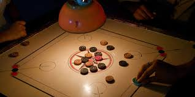Carrom is a popular indoor board game in India and several other countries, known for its simplicity and fun gameplay. It is often played at home, in recreational clubs, and in community centers, making it a widely recognized and loved game, especially in South Asia.